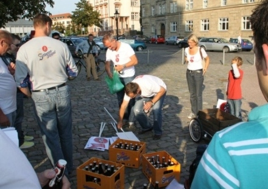
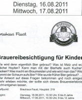
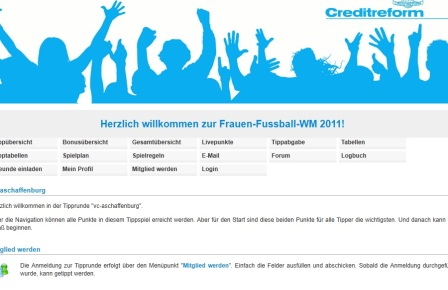

Urlaubsbedingt gibt es bis Mitte August keine Aktualisierung dieser Seiten. Kommentare müssen in dieser Zeit moderiert (freigegeben) werden, was sicherlich nur alle paar Tage geschehen kann.
Wir wünschen allen Leserinnen und Lesern eine schöne Sommer- und Urlaubszeit!
Und: Unter der Rubrik „Links“ finden sich viele gute Seiten, die insbesondere bei schlechtem Wetter für interessante Lektüre und gelegentlich Radiosendungen, für Musik und Kunst sorgen.
Es wurde bereits in den Kommentaren zum Beitrag über die Kinder und die Faust-Brauerei angemerkt, dass die Miltenberger ab 1. Oktober das Bier in die Aschaffenburger Traditionsgaststätte Schlappeseppel liefern wollen. In Aschaffenburg kocht der Zorn. So eine Kulturlosigkeit will man sich nicht bieten lassen. Sogar eine Demonstration pro Schlappe-Bier in der Schlappe-Kneipe gab es (siehe Foto).

Eine andere Form des Protestes gegen Faust-Bier und Festzelt-Kommerz haben sich junge Leute ausgedacht. Sie machen parallel zum Bieranstich von Faust zu Beginn der Michaelismesse den „Wodka-Anstich“. Ein wirklicher Gewinn ist das freilich nicht, noch hochprozentigeres Gesöff zu verkosten. Aber immerhin weniger kommerziell und irgendwie originell. Sogar ein Ankündigungsplakat gibt es:
Liebe Montagsdemonstrant(inn)en und an alle Interessierte,
wir treffen uns wieder von der Montagsdemo gegen Sozialkahlschlag am 1. August diesmal ab 18 Uhr am Eingang des Schöntal-Parks (gegenüber Herstallturm). (mehr…)
zugesandter Bericht Deutsch-Ausländische Gesellschaft: Einsatz für Flüchtlinge
Die Deutsch-Ausländische Gesellschaft Alzenau (Daga) hat eine positive Bilanz ihres Auftritts beim Fest »Brüderschaft der Völker« in Aschaffenburg gezogen. (mehr…)
Generationen von Eltern, anderen Erziehungspersonen und Suchtberatungsstellen haben davor gewarnt, dass unsere Kinder den Rauschmitteln auf den Leim gehen. Nicht so in Miltenberg. Dort ist man schon viel weiter: Das Brauhaus Faust bietet mit städtischem Segen im Rahmen der Ferienspiele zwei Events an: „Brauereibesichtigung für Kinder“. Kein Witz! Zwar werden die Kids wohl keinen Stoff zu trinken bekommen, aber Mädchen und Jungs ab sechs Jahren (!) bekommen das Bierbrauen und damit das Bier an sich nahe gebracht. Das ist kindlicher Einstieg in die Akzeptanz jenes Rauschmittels, das erheblich mehr Elend in die Welt bringt als alle illegalen Drogen zusammen. Da wird man sprachlos!
 Seite aus dem Veranstaltungsheft zu den Miltenberger Ferienspielen
Es stimmt, wir können dankbar sein, dass Amorbach nicht Oslo ist. Waffen in Händen von Knallrechten führen nicht immer bzw. nicht sofort zu Anschlägen, schon gar nicht zu solchen wie in Norwegen, wo jetzt über 90 Menschen durch Bomben und Schußwaffen ums Leben kamen und derzeit offiziell von einem Einzeltäter ausgegangen wird. Am Untermain konnte z.B. 1997 in Amorbach (siehe Fotos) und 2006 in Elsenfeld die Polizei rechte Waffenlager ausheben und evtl. Schlimmeres verhindern. Mehr dazu gab es damals bei Indymedia.
Die Beweggründe des rechten Killers in Norwegen (mehr…)
Der auf Basis der kommunal_prints 1 und 2 erstellte Beitrag über die Jugendinitiative Miltenberg für Wikipedia wurde dort wegen seltsamer Kriterien nicht veröffentlicht. Pluspedia, ein Portal zur Rettung nicht publizierter Wikipedia-Beiträge, hat auch diesen Beitrag gerettet. Für aufmersame kommunal-Leserinnen und -Leser bringt er wohl nichts Neues, ist aber nochmal eine gute Zusammenfassung. Mehr Infos zur JUI gibt es bei kommunal.tk in der Rubrik Jugend & Bildung.
Hinweisen müssen wir dringend auf die beiden noch ausstehenden Termine am Blauen Klavier (s.o.) vor der City Galerie in Aschaffenburg: jeweils donnerstags, 28. Juli und 25. August, 19 Uhr. Es gibt Lyrik, Prosa, Songs, Kleinkunst … In einem früheren Beitrag haben wir uns schon mit diesem Phänomen beschäftigt. Zum Nachlesen allemal empfehlenswert.
Das „Bündnis 500 Euro Eckregelsatz – 10 Euro Mindestlohn“, dem verschiedene soziale Organisationen angehören, hat zu einem Aktionstag für einen gesetzlichen Mindestlohn von 10 Euro (lohnsteuerfrei) aufgerufen.
Die Montagsdemo Aschaffenburg schließt sich („außerplanmäßig“) diesem Aktionstag am Montag den 25. Juli an und trifft sich dazu um 18 Uhr im Schöntal-Park vor der City-Galerie. (mehr…)
Die Aschaffenburger Friedentrommler trommeln wieder durch die Innenstadt – am Samstag, 16. Juli ab 11.30 Uhr vor dem Schloss Aschaffenburg. Erstmals wird dabei ein Flugblatt verteilt. Der Text wurde uns zugesandt: (mehr…)
Manchmal gibt es auch Gutes zu berichten vom bayerischen Untermain. So z.B. dass Miltenberg ein neues Museum hat. Den Link dazu haben wir in der Rubrik LINKS veröffentlicht. Hier ist er nochmal: Museum.Burg.Miltenberg – Kunstsammlung auf der Mildenburg oberhalb von Miltenberg
Folgende zugesandte Meldung könnte für viele recht interessant sein:
Fühlen Sie sich willkommen und feiern Sie mit uns die Comebacks des Jahres! Nicht weniger als 5 Legenden der grössten Provinzpunkbands aus der Region spielen einmalig nur für Sie. Nutzen Sie diese Gelegenheit und feiern Sie mit uns gemeinsam die Helden der Käffer rund um Aschaffenburg. Vergessen Sie Hardcore, scheissen Sie auf Hip-Hop und tauchen Sie ab in die subkulturellen Tiefen der Provinz! Mit dabei sind: (mehr…)
Mit Preisauschreiben und Zuckertütchen mit Werbeaufdruck versucht die Stadt Miltenberg derzeit, auf das Fest im kommenden Jahr hinzuweisen: Nicht 700, nicht 750 und auch nicht 800 Jahre Stadt Miltenberg werden gefeiert, sonder 775 Jahre. Wie originell. Da können sie auch gleich noch in 5 Jahren das 780. Stadtjubiläum abfeiern.
Besonderer Gag: Es soll auch ein „originelles, ungewöhnliches Foto, versehen mit einem lustigen Spruch“ für eine Postkarte eingesandt werden. Thema muss das Motto des Festjahres sein: 775 Jahre Miltenberg – jung und lebendig. Mapec hat bereits ein Kartenmotiv vorgelegt, das er aber nicht einreicht. Einfach zu chancenlos:
Übrigens: Das hier gezeigte Haus hat es in Miltenbergt wirklich gegeben. Es ist zusammengefallen. Näheres dazu im Beitrag zu den Einstürzenden Altbauten.
Nachdem es in den letzten Monaten doch einige Blogeinträge gegeben hat (mehr als ursprünglich vermutet, da der Schwerpunkt von kommunal.tk die Beiträge sind), wurden diese nun nach Suchbegriffen geordnet. Vielleicht bringt das für den einen oder die andere einige Hinweise auf der Suche nach Information.
Kaum zu glauben aber wahr: Die Creditreform (zu Risiken und Nebenwirkungen frag Deine lokale Schuldnerberatung) in Aschaffenburg setzt auf ihrer Homepage die Frauen-Fußball-WM als Werbemittel ein:

Zugegeben: Die Fußballfrauen können nichts dafür – und dass sie so schön gegen die Japanerinnen ausgeschieden sind, das verhagelt der Creditreform zumindest den Werbeerfolg etwas.
Was man oder frau aber gegen die Creditreform und andere Schuldeneintreiber machen könnte? Nun, das hat der schier göttliche Zinedine Zidane bei seinem allerletzten Spiel vorgemacht: Kopfarbeit (siehe unten)!